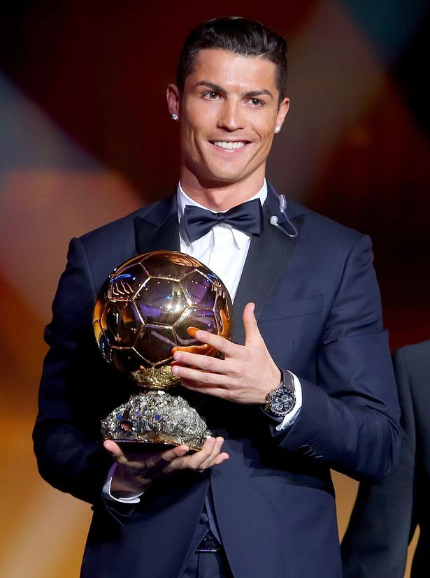

Real MadridManchester UnitedJuventusAl-NassrSporting CPPortugal

GoalsClub / Country
Real Madrid CF
450
Manchester United F.C.
145
Juventus FC
101
Al-Nassr FC
132+
Sporting CP
5
Portugal
145+
2002-2003
Sporting CP
Ronaldo made his professional debut after coming through the club's youth academy. Senior appearances: 31. Goals: 5.
2003-2009
Manchester United F.C.
Won 3 Premier League titles, 1 UEFA Champions League, 1 FA Cup, 2 League Cups, and 1 FIFA Club World Cup. Won his first Ballon d'Or in 2008.
2009-2018
Real Madrid CF
The most successful period of his club career, including 2 La Liga titles, 4 UEFA Champions League titles, and 3 FIFA Club World Cups. Became Real Madrid's all-time leading goalscorer with 450 goals.
2018-2021
Juventus FC
Won 2 Serie A titles, 1 Coppa Italia, and 2 Supercoppa Italiana trophies.
2023-Present
Al-Nassr FC
Currently plays in the Saudi Pro League, continuing to score at a prolific rate while helping raise the league's global profile.